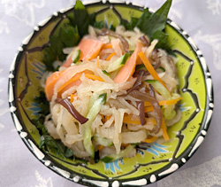

切干大根のサーモンマリネ
- 調理時間：20分
- （一人当たり）
- カロリー：93kcal
- たんぱく質：6.9g
- 脂質：1.3g
- 炭水化物：1.6g
- 塩分：2.5g


＜2人分＞
- 切干大根（乾）
- 30g
- キュウリ
- 30g
- ニンジン
- 20g
- きくらげ
- 20g
- スモークサーモン
- 40g
A
- ・穀物酢
※レモン汁と合わせてもよい - 1/3カップ
- ・だし汁
- 1/3カップ
- ・塩
- 小さじ1
- ・みりん
- 小さじ1
- ・コショウ
- 少々


- 切干大根はもみ洗いした後、熱湯でさっとゆがき（歯ごたえが残るように）、冷水で洗って水分をしぼる。
- キュウリ、ニンジン、きくらげは各々細切りにする。
スモークサーモンは食べやすい大きさに切る。 - ボウルにAの材料をあわせ、キュウリ、ニンジン、きくらげ、①の切干大根を混ぜ合わせる。
- 仕上げにスモークサーモンを加えてあわせる。冷蔵庫で冷やして味をなじませて完成。
切干大根のサーモンマリネ
大根は消化酵素を豊富に含み、また辛味成分が胃液の分泌を促し、消化力を高める作用があります。肺を潤す作用もあるので、乾燥しやすい秋から冬にかけて感染症予防にもおすすめです。薬膳では「気」を逃さない加熱調理が重視されますので、冷え性の方は乾物の切干大根や火を通して温かい料理を食べるようにするとよいでしょう。